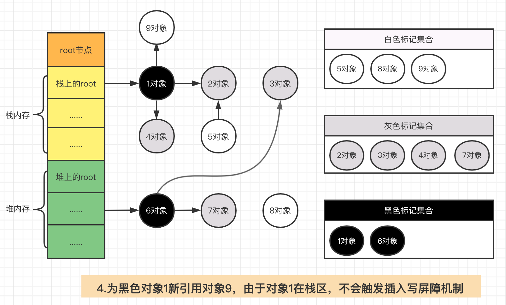

一文弄懂 Golang GC、三色标记、混合写屏障机制
一文弄懂 Golang GC、三色标记、混合写屏障机制【图文全解析】
大家好，我是小道哥
GC是面试里的老八股文了，提起GC，很多人心里会发怵，但好好准备一番后，弄清其中的来龙去脉，在面试的过程中，往往能够舌灿莲花。今天小道哥，特地梳理了一下GC的相关知识点，相信在各位道友看完后，也可以对面试官提出的GC问题，灰常自信的娓娓道来…
背景知识
什么是GC？
垃圾回收（Garbage Collection，缩写为GC），是一种自动内存管理机制。
即我们在程序中定义一个变量后，会在内存中开辟相应空间进行存储。当不需要此变量后，需要手动销毁此对象，并释放内存。而这种对不再使用的内存资源进行自动回收的功能即为垃圾回收
GC相关术语
在对GC开始讲解之前，有很多关于GC的行话，先普及一下，不然后文读起来会稍微有点懵。
**赋值器:**说白了就是你写的程序代码，在程序的执行过程中，可能会改变对象的引用关系，或者创建新的引用。
**回收器:**垃圾回收器的责任就是去干掉那些程序中不再被引用得对象
**STW:**全称是stop the word，GC期间某个阶段会停止所有的赋值器，中断你的程序逻辑，以确定引用关系。举个栗子，有一个大院，孩子特别多，老师希望他们以班长为起点手牵手在一起，但总有几个不听话的孩子，没有牵手，你为了找出这些不听话的孩子，你会以班长为起点，一个一个的往后捋。但是如果有一个名叫张三的孩子，之前在队尾，后来在你数到队伍中间的时候，又跑到了队头和班长牵手去了，当你数完后，因为没有统计到张三，你就认为张三没有听话，没有奖励小红花，岂不让孩子比窦娥还冤…，所以这种情况下，你需要先让孩子们不动【映射到程序的概念，即STW停止程序运行】，然后再统计。
**root对象:**根对象是指赋值器不需要通过其他对象就可以直接访问到的对象，通过Root对象, 可以追踪到其他存活的对象。常见的root对象有：
- 全局变量：程序在编译期就能确定的那些存在于程序整个生命周期的变量。
- 执行栈：每个 goroutine (包括main函数)都拥有自己的执行栈，这些执行栈上包含栈上的变量及堆内存指针。【堆内存指针即在gorouine中申请或者引用了在堆内存的变量】
Go的GC发展演变史
v 1.3-标记清除法
标记清除法主要包含两个步骤：
- 标记
- 清除
示例如下：
1、开启STW，停止程序的运行，图中是本次GC涉及到的root节点和相关对象。

2、从根节点出发，标记所有可达对象。
3、停止STW，然后回收所有未被标记的对象

标记清除法的**最大弊端就是在整个GC期间需要STW，将整个程序暂停。**因为如果不进行STW的话，会出现已经被标记的对象A，引用了新的未被标记的对象B，但由于对象A已经标记过了，不会再重新扫描A对B的可达性，从而将B对象当做垃圾回收掉。
说实话这种全程STW的GC算法真的是如过街老鼠，人见人打…好家伙，让我程序停下来，专门去做垃圾回收这件事，在追求高性能的今天，很难有人可以接受这种性能损耗。
所以Golang团队这个时期就开始专注于如何能提升GC的性能，这里希望各位道友能明白Golang团队对GC算法优化的方向是什么，或者目标是什么，那就是让GC和用户程序可以互不干扰，并发进行。所以才有了后面的三色标记法。
v1.5 三色标记法
三色标记法
对于上述的三色标记法来讲,仍然需要依赖STW的. 因为如果不暂停程序, 程序的逻辑改变对象引用关系, 这种动作如果在标记阶段做了修改，会影响标记结果的正确性。我们举一个场景。


看到这里，张三道友陷入了沉思，质疑小道哥说： “等等，普通的标记清除法，需要STW，好家伙，你这一顿操作猛如虎，咋还是需要STW，性能上没有什么优化啊…”
好，那我们接着说，Golang是如何解决这个STW问题的呢？
其实总结来看，在三色标记法的过程中对象丢失，需要同时满足下面两个条件：
- 条件一：白色对象被黑色对象引用
- 条件二：灰色对象与白色对象之间的可达关系遭到破坏
看来只要把上面两个条件破坏掉一个，就可以保证对象不丢失，所以我们的golang团队就提出了两种破坏条件的方式：强三色不变式和弱三色不变式。
两种不变式
强三色不变式
规则：不允许黑色对象引用白色对象
破坏了条件一： 白色对象被黑色对象引用
解释：如果一个黑色对象不直接引用白色对象，那么就不会出现白色对象扫描不到，从而被当做垃圾回收掉的尴尬。
弱三色不变式
规则：黑色对象可以引用白色对象，但是白色对象的上游必须存在灰色对象
破坏了条件二：灰色对象与白色对象之间的可达关系遭到破坏
解释： 如果一个白色对象的上游有灰色对象，则这个白色对象一定可以扫描到，从而不被回收
]
{kind=link}
屏障机制
Golang团队遵循上述两种不变式提到的原则，分别提出了两种实现机制：插入写屏障和删除写屏障。
插入写屏障：
**规则：**当一个对象引用另外一个对象时，将另外一个对象标记为灰色。
满足：强三色不变式。不会存在黑色对象引用白色对象
这里需要注意一点，插入屏障仅会在堆内存中生效，不对栈内存空间生效，这是因为go在并发运行时，大部分的操作都发生在栈上，函数调用会非常频繁。数十万goroutine的栈都进行屏障保护自然会有性能问题。
下面我们看看插入写屏障机制，在插入写屏障机制下是如何保护对象不丢失的。


可以发现，对象3在插入写屏障机制下，得到了保护，但是由于栈上的对像没有插入写机制，在扫描完成后，仍然可能存在栈上的白色对象被黑色对象引用，所以在最后需要对栈上的空间进行STW，防止对象误删除。如下所示：


对于插入写屏障来讲，道友们需记住，插入写屏障最大的弊端就是，在一次正常的三色标记流程结束后，需要对栈上重新进行一次stw，然后再rescan一次。
删除写屏障
**规则：**在删除引用时，如果被删除引用的对象自身为灰色或者白色，那么被标记为灰色。
满足弱三色不变式。灰色对象到白色对象的路径不会断
**解释：**白色对象始终会被灰色对象保护
下面我们看看在删除写屏障机制下是如何保护对象不丢失的。

但是引入删除写屏障，有一个弊端，就是一个对象的引用被删除后，即使没有其他存活的对象引用它，它仍然会活到下一轮。如此一来，会产生很多的冗余扫描成本，且降低了回收精度，举例来讲。

小结
从上面示例来看，插入写屏障机制和删除写屏障机制中任一机制均可保护对象不被丢失。在V1.5的版本中采用的是插入写机制实现。
对比插入写屏障和删除写屏障：
-
插入写屏障：
-
插入写屏障哪里都好，就是栈上的操作管不到，所以最后需要对栈空间进行stw保护，然后rescan保证引用的白色对象存活。
-
删除写屏障：
-
在GC开始时，会扫描记录整个栈做快照，从而在删除操作时，可以拦截操作，将白色对象置为灰色对象。
-
回收精度低。
v1.8 混合写屏障机制
讲到这里，如果是你，你会怎么做呢？当然是取其精华，去其糟泊啦…没错，Golang团队，正是结合了这两点，在v1.8版本下引入了混合写屏障机制。下面我们看下混合屏障机制的核心定义：
- GC刚开始的时候，会将栈上的可达对象全部标记为黑色。
- GC期间，任何在栈上新创建的对象，均为黑色。
上面两点只有一个目的，将栈上的可达对象全部标黑，最后无需对栈进行STW，就可以保证栈上的对象不会丢失。有人说，一直是黑色的对象，那么不就永远清除不掉了么，这里强调一下，标记为黑色的是可达对象，不可达的对象一直会是白色，直到最后被回收。
-
堆上被删除的对象标记为灰色
-
堆上新添加的对象标记为灰色
下面我们看看混合写屏障机制的示例图。


张三道友看到这里，提出了一个问题，万一栈上的对象1引用了堆上的对象8，由于不触发混合写屏障机制，那对象8一直是白色的，最后不就被垃圾回收走了么，谁来保护它？
这个问题很好，私下里很多粉丝也咨询过我，这里统一解释一下，这个情况是不会发生的，因为一个对象之所以可以引用另外一个对象，它的前提是需要另外一个对象可达，图中的8号显然是不可达的，所以不会出现这种情况。
那又有道友问了，为什么1号对象可以引用7号对象呢？这是因为1号对象在引用7号对象的时候，对象7是在对象6的下游，本身是可达。

总结
- Golang v1.3之前采用传统采取标记-清除法，需要STW，暂停整个程序的运行。
- 在v1.5版本中，引入了三色标记法和插入写屏障机制，其中插入写屏障机制只在堆内存中生效。但在标记过程中，最后需要对栈进行STW。
- 在v1.8版本中结合删除写屏障机制，推出了混合屏障机制，屏障限制只在堆内存中生效。避免了最后节点对栈进行STW的问题，提升了GC效率